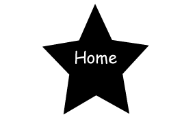

The word "doge" is a slang word for the word "dog". The term doge was first used on Homestar Runner's puppet show. It was then on June 24th, 2005 that doge was created. The doge that is favoured throughout the Internet is Shiba Inus, also known as Shibe. She first got discovered when her owner posted photos of her on her blog. After posting images a reddit user posted this image. The post received 266 upvotes, thus the Internet sensation was born. Some of the best of Doge can be found here. More about Doge can be found here.